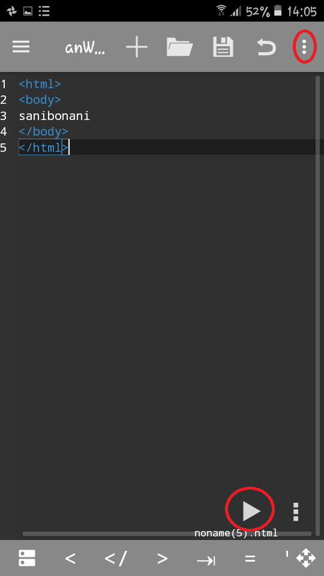
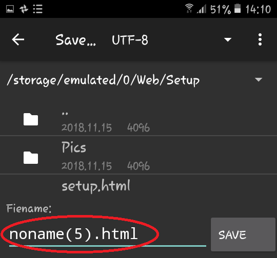

click on + to open a new document
type in anWriter the above code exactly. Press the play button to run the code.
Press the 3 dots ON THE TOP when you are ready to save the file.
press Save as
Pick the folder you want to save in. For lesson1 it should be ZLC>L1. This means find and click ZLC first and then click L1.
Change the file name to lesson1.html and press save
For lesson2 create a folder named L2 inside ZLC. When you are saving the the html file save as lesson2.html